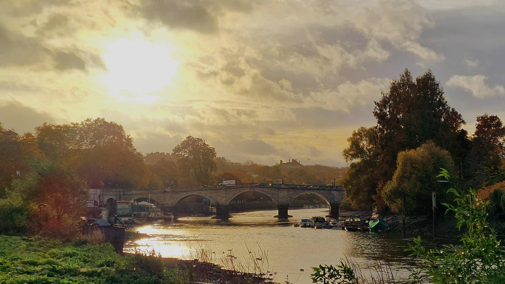
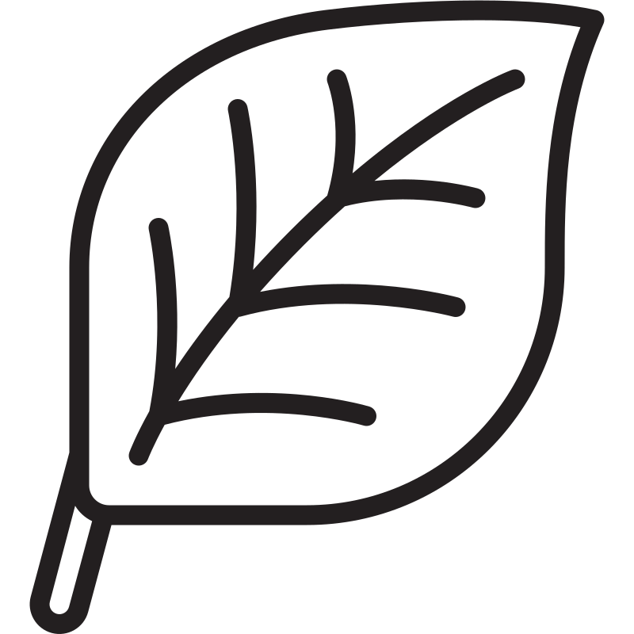

Walks and days out
Find riverside paths, places to stop and the best views, and give and receive guidance on just idly spending time by the river.
- River Paths
- Viewing Points
- Riverside Food and Drink
- Toilets

An atlas and guide to rivers anywhere in the world
Discover the places, wildlife, history, watersports, boating and live river conditions that make every river and canal a delight.
Starting in Britain. Built for rivers anywhere in the world.
Be one of the first 40See EveryRiver in action
EveryRiver – An Atlas and Guide to rivers and canals. Film by EveryRiver. Watch on YouTube
Why an atlas and guide?
We believe the more you understand them, the more you can enjoy them. That leads to a deeper care for them and a thirst for more knowledge.

Atlas and guide
One river, the whole story. EveryRiver brings scattered knowledge together, from public authorities and from its community, and starts from what brings you to the water. It works on a laptop, a PC and a phone.
Find riverside paths, places to stop and the best views, and give and receive guidance on just idly spending time by the river.
Plan a trip with locks, moorings and boating facilities, and see the closures and warnings the navigation authorities publish.

Find where to get on the water, where to swim, and the clubs and centres that can help you start.


Explore species, habitats and nature observations connected to each stretch of river.

Understand how our lives, buildings, events and language have been shaped by the water.

Follow the river from its source in the hills to the sea, and see its levels, flows, rainfall, tides and water quality as they change.

Screens from the EveryRiver beta, 18 November 2026. Photos in them by riparian001 (CC BY 4.0) and Cacolantern (public domain). Map data © OpenStreetMap contributors.
See it working
Twenty-four minutes with the EveryRiver beta, showing the atlas and guide in use.
EveryRiver atlas and guide demo, 24 minutes. Film by EveryRiver. Watch on YouTube
Including data provided or published by:
Figures checked 18 November 2026.
Knowledge connected
River and canal knowledge is scattered across maps, datasets, encyclopaedias, field observations and local experience. EveryRiver brings them to you as one, so you can easily understand and enjoy them more.
Information from Wikipedia, Wiktionary and iNaturalist is included within the atlas and guide.
Sources and provenance remain visible, so knowledge can be checked, understood and improved. Add your favourite books, explain how things work, and verify, update, challenge and edit, for the benefit of future generations.
EveryRiver is not a finished atlas being prepared behind closed doors. It is a library that will grow through the knowledge, experience and creativity of its community.
The first 40 people to use EveryRiver will help shape it. Sign up to the newsletter to be one of them.
Get updatesCreated for public benefit
EveryRiver will be a permanent, open, objective and independent source of information.
EveryRiver is constitutionally not for profit and exists solely for public benefit.
Our information will always be free.
EveryRiver will be funded by private donations, not commercial income.
Information created by EveryRiver will be open data, following FAIR principles.
Read our constitutional commitments and approach to open data
Roadmap
EveryRiver opens first to 40 people who will help add to the atlas and tell us what they think. It opens to everyone after that. No date is set, and the newsletter is where we will say first.
Forty people use EveryRiver, add what they know and tell us what works and what does not.
We improve the experience, knowledge and contribution tools with what they tell us.
No date is set. Newsletter subscribers hear first.